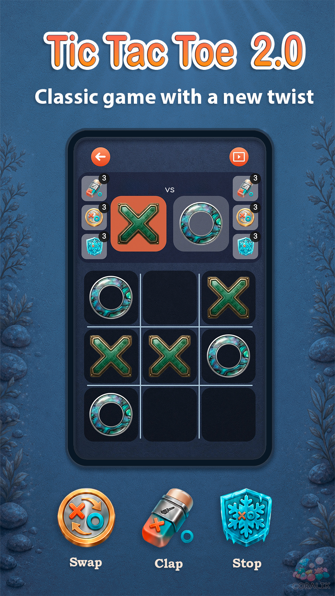
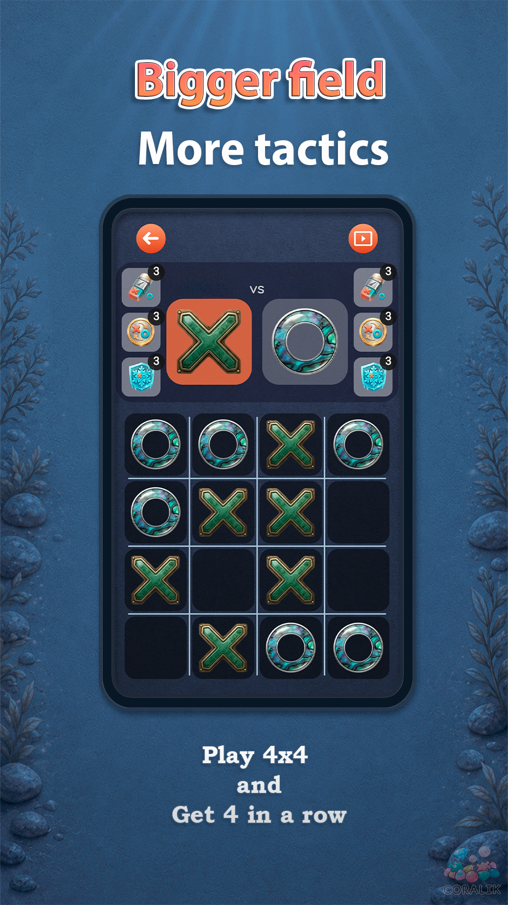
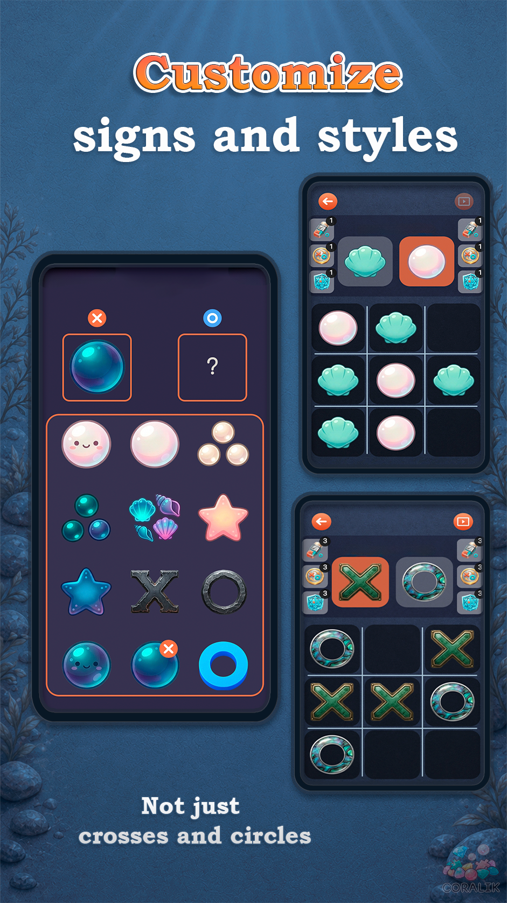
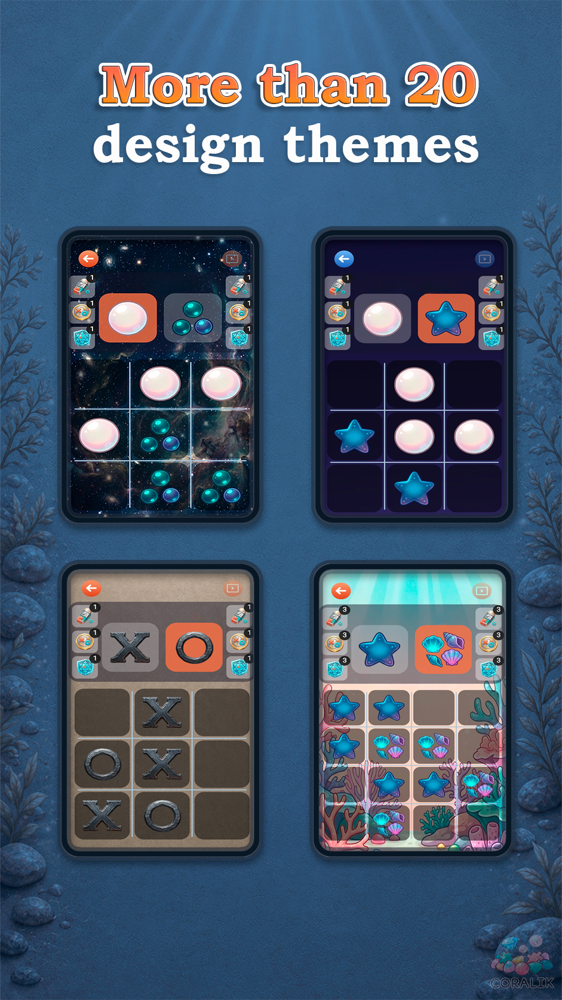
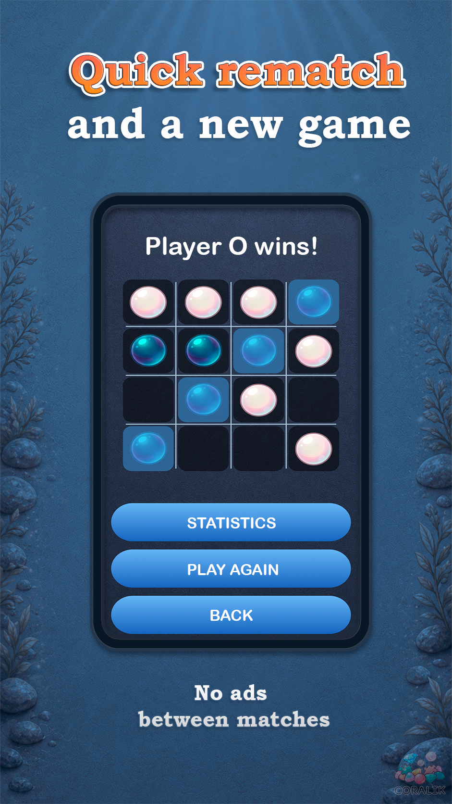

Tic Tac Toe 2.0
Play on 3×3 or 4×4 boards, use extra tactical moves, try disappearing pieces, compete with AI, or play together on one screen.

Get the game
Replace GOOGLE_PLAY_URL, RUSTORE_URL, and VK_COMMUNITY_URL with the real links.
Game features
Classic and extended modes
Use the familiar rules or add special moves that can completely change the board.
3×3 and 4×4 boards
Choose a quick classic match or a larger field with more room for tactics.
Special actions
Remove an opponent’s piece, swap pieces, or freeze a move.
Disappearing pieces
Track the move order and plan around the next piece that will vanish.
AI or local two-player
Practice against the computer or play together on the same device.
Offline and no purchases
All gameplay features are available immediately, with no subscription required.
Screenshots




FAQ
How do the extra mechanics work?
During a match you can remove an opponent’s piece, swap pieces, or freeze a move. In a separate mode, older pieces gradually disappear.
Can I play without internet?
Yes. The game works fully offline.
Do themes or bonuses cost money?
No. There are no in-app purchases or paid subscriptions. All features are available from the start.
Can I customize the design?
Yes. You can change the background, board style, and the appearance of X and O pieces.